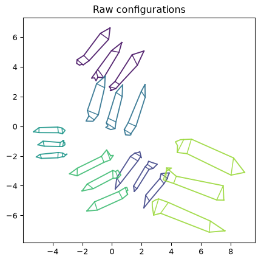
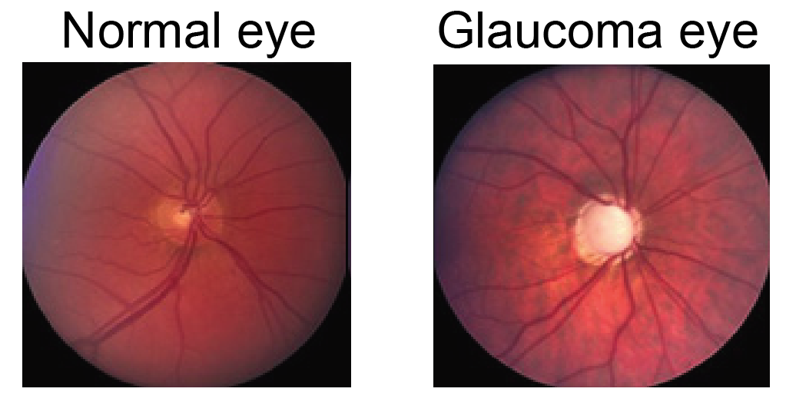
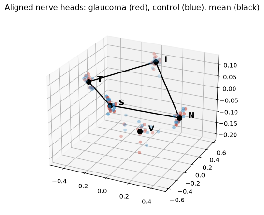
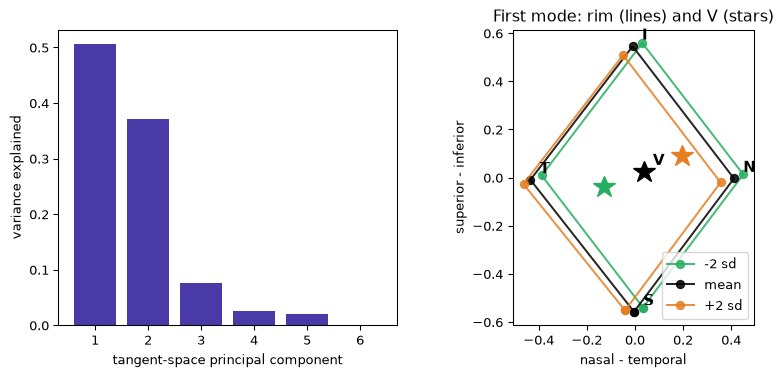

What’s Left When You Take Away Position, Size and Angle
Kendall shape analysis: a deterministic pipeline, two datasets, and why PCA always turns up right behind it
Statistics
Geometry
Computational Biology
Author
Ravi Kalia
Published
August 14, 2026
What’s Left When You Take Away Position, Size and Angle
1 Kendall shape analysis
Shape is what remains after removing translation, scale, and rotation from a landmark configuration. The removal steps are deterministic (no fitting). The resulting shape space is curved; standard multivariate tools assume flat space.
This post:
Defines the similarity pipeline (centre, scale, Procrustes rotation).
Validates on synthetic pencil tracings with known ground truth.
Applies the pipeline to optic nerve head landmarks from geomstats.
Fits tangent-space PCA at the Fréchet mean.
2 Landmarks and the similarity pipeline
A specimen is a \(k \times m\) matrix: \(k\)landmarks (anatomically corresponding points) with \(m\) coordinates each.
Three nuisances removed by linear algebra (deterministic, no estimation):
Translation: centre landmarks at the origin. \(X_c = CX\), \(C = I_k - \frac{1}{k}\mathbf{1}\mathbf{1}^\top\).
Scale: divide by Frobenius norm \(\lVert X_c \rVert_F = \sqrt{\sum_{ij} x_{ij}^2}\) so every configuration has size 1.
Rotation: least-squares rotation onto a target \(Y\). With \(Y^\top X = U\Sigma V^\top\), \(R = VU^\top\) minimises \(\lVert XR - Y \rVert_F\) (Gower, 1975).
What survives is shape (Kendall, 1984).
3 Synthetic pencil validation
Data: synthetic. Three pencil outlines, 10 landmarks each, copied six times.
Generating process:
Landmarks jittered by 3% of pencil length.
Each copy randomly rotated, scaled, and shifted.
Stands in for: freehand tracings where hand position, paper angle, and zoom vary between sittings.
Ground truth: all copies share one template; post-alignment variation is injected jitter only.
Why synthetic: known truth for validating nuisance removal before real data.
Code
import numpy as npimport matplotlib.pyplot as pltrng = np.random.default_rng(20)# One pencil: 10 landmarks tracing a closed outline clockwise from the tip. Every# one is a corner of the silhouette -- a point you could find again on another# drawing of the same pencil -- rather than an arbitrary mark along a straight edge.PENCIL = np.array([ [0.00, 3.00], # 0 graphite tip [0.25, 2.45], # 1 right shoulder, where the sharpened cone meets the barrel [0.25, 0.62], # 2 right barrel/ferrule joint [0.25, 0.20], # 3 right ferrule/eraser joint [0.17, 0.02], # 4 right corner of the eraser cap [0.00, -0.06], # 5 eraser crown [-0.17, 0.02], # 6 left corner of the eraser cap [-0.25, 0.20], # 7 left ferrule/eraser joint [-0.25, 0.62], # 8 left barrel/ferrule joint [-0.25, 2.45], # 9 left shoulder])K =len(PENCIL)# Interior detail lines, as chords between landmarks already in the set: the# sharpening line, then the two edges of the ferrule band.CHORDS = [(1, 9), (2, 8), (3, 7)]def template():"""Three similar-but-not-identical pencils side by side, as one 30x2 configuration.""" pencils = []for offset, length inzip([-1.3, 0.0, 1.3], [1.0, 0.92, 1.08]): p = PENCIL * np.array([1.0, length]) pencils.append(p + np.array([offset, 0.0]))return np.vstack(pencils)def rotation(theta): c, s = np.cos(theta), np.sin(theta)return np.array([[c, -s], [s, c]])def freehand_copy(base, rng):"""Jitter the landmarks, then move, resize and turn the whole thing.""" drawn = base + rng.normal(0.0, 0.09, base.shape) scale = rng.uniform(0.6, 1.8) shift = rng.uniform(-4.0, 4.0, size=2)return scale * (drawn @ rotation(rng.uniform(0, 2* np.pi)).T) + shiftbase = template()copies = np.stack([freehand_copy(base, rng) for _ inrange(6)])print(f"{copies.shape[0]} copies of a {copies.shape[1]} x {copies.shape[2]} configuration")
6 copies of a 30 x 2 configuration
Plotted as drawn, they share no frame of reference.
Code
from matplotlib.colors import to_rgbCOLOURS = plt.cm.viridis(np.linspace(0.05, 0.85, 6))def draw(ax, config, colour, lw=1.4, alpha=0.9, detail=True):"""Draw a configuration as three pencils. Everything drawn here is a function of the landmarks -- the barrel facets and the nib are interpolated between them, not extra points -- so the whole picture moves with the configuration and GPA still sees only the 30 landmarks. `detail=False` drops the facets and the nib, for overlays where six pencils' worth of interior lines would be a thicket. """for start inrange(0, len(config), K): pencil = config[start:start + K] loop = np.vstack([pencil, pencil[0]]) ax.plot(loop[:, 0], loop[:, 1], color=colour, lw=lw, alpha=alpha)for i, j in CHORDS: ax.plot(*pencil[[i, j]].T, color=colour, lw=lw *0.8, alpha=alpha)ifnot detail:continue# Facets of the hexagonal barrel: two lines from the shoulder down to the# ferrule, at a third and two thirds of the way across.for f in (1/3, 2/3): top = pencil[1] + f * (pencil[9] - pencil[1]) bottom = pencil[2] + f * (pencil[8] - pencil[2]) ax.plot(*np.array([top, bottom]).T, color=colour, lw=lw *0.7, alpha=alpha *0.8)# The graphite nib, filled solid: the tip and a third of the way down each# cone edge, in a darkened version of the copy's own colour. nib = np.array([pencil[0], pencil[0] +0.34* (pencil[1] - pencil[0]), pencil[0] +0.34* (pencil[9] - pencil[0])]) graphite = [0.4* channel for channel in to_rgb(colour)] ax.fill(nib[:, 0], nib[:, 1], color=graphite, alpha=min(1.0, alpha +0.1))fig, ax = plt.subplots(figsize=(6.5, 5))for config, colour inzip(copies, COLOURS): draw(ax, config, colour)ax.set_aspect("equal")ax.set_title("Raw configurations")plt.show()

Figure 1: Six freehand copies of the same three pencils, before alignment. Same shape, six coordinate systems.
Rotation requires a target mean. Generalised Procrustes analysis (GPA) (Goodall, 1991): centre and scale; provisional mean; rotate onto mean; re-average; iterate.
Code
def centre_and_scale(config):"""Remove translation (centring matrix) and scale (Frobenius norm).""" centred = config - config.mean(axis=0)return centred / np.linalg.norm(centred)def rotate_onto(config, target):"""Least-squares rotation of `config` onto `target`, via the SVD of the cross-product.""" u, _, vt = np.linalg.svd(target.T @ config) R = vt.T @ u.Tif np.linalg.det(R) <0: # a reflection is not a rotation; flip the last axis back vt[-1] *=-1 R = vt.T @ u.Treturn config @ Rdef gpa(configs, tol=1e-10, max_iter=100):"""Generalised Procrustes analysis: centre, scale, then iterate rotate-to-mean.""" aligned = np.stack([centre_and_scale(c) for c in configs]) mean = aligned[0]for _ inrange(max_iter): aligned = np.stack([rotate_onto(c, mean) for c in aligned]) new_mean = centre_and_scale(aligned.mean(axis=0))if np.linalg.norm(new_mean - mean) < tol:break mean = new_meanreturn aligned, meanaligned, mean_shape = gpa(copies)residual = np.linalg.norm(aligned - mean_shape, axis=(1, 2))print(f"residual distance to the mean shape: {residual.round(3)}")
residual distance to the mean shape: [0.074 0.076 0.068 0.071 0.06 0.077]
Design: 11 rhesus monkeys, both eyes; experimental glaucoma in one eye, fellow eye as control.
Objective: test whether nerve-head shape (not just appearance) differs between glaucomatous and control eyes within each monkey.
Downstream impact: misreading disc shape affects glaucoma staging and treatment.
Clinical signal: glaucomatous discs go pale; cup widens at rim expense.

Normal and glaucomatous optic nerve heads from this study. Image: geomstats tutorial (Miolane et al., MIT licence); data from Patrangenaru and Ellingson (2015).
4.1 Landmark coordinates
Five landmarks per nerve head:
Four rim points: superior (S), temporal (T), nasal (N), inferior (I).
Fifth (V): deepest cup point — requires depth, not available from a flat photograph.
Units: microns. Rim landmarks within 135 µm of one plane; V ≈ 540 µm below. \(m = 3\) preserves cup depth — the quantity glaucoma destroys.
One nerve head: \(5 \times 3\) matrix. Full dataset: (22, 5, 3).
Code
# pip install "geomstats<3" "numpy<2" # geomstats 2.8 still imports numpy.trapzfrom geomstats.datasets.utils import load_optical_nervesLANDMARKS = ["S", "T", "N", "I", "V"]nerves, labels, monkeys = load_optical_nerves() # 0 = control, 1 = glaucomaprint(f"array shape {nerves.shape} = (configurations, k landmarks, m coordinates)")print(f"{len(nerves)} nerve heads from {len(set(monkeys.tolist()))} monkeys, two eyes each\n")print("one configuration -- monkey 0, control eye, microns:")for name, (x, y, z) inzip(LANDMARKS, nerves[0]):print(f" {name} across {x:7.0f}{y:7.0f} depth {z:8.1f}")
array shape (22, 5, 3) = (configurations, k landmarks, m coordinates)
22 nerve heads from 11 monkeys, two eyes each
one configuration -- monkey 0, control eye, microns:
S across 2580 1060 depth 60.3
T across 1360 2660 depth -78.4
N across 3800 2660 depth -132.7
I across 2580 4260 depth 126.7
V across 2180 2820 depth -542.8
4.2 Kendall shape space dimension
Raw coordinates minus translation (\(m\)), scale (1), and rotation quotient (\(m(m-1)/2\)):
\[\dim \Sigma^k_m = km - m - 1 - \frac{m(m-1)}{2}\]
Quotienting out rotation: all rotations of one shape map to a single point.
Triangles in the plane (\(k=3, m=2\)): 2 dimensions (a 2-sphere of triangle shapes).
With \(n = 22\) and \(d = 8\), fitting a full parametric model is underdetermined; removing nuisances first leaves room for statistics on shape signal.
Code
def shape_space_dim(k, m):"""Raw coordinates, less translation, scale, and the rotations quotiented out."""return k * m - m -1- m * (m -1) //2for k, m, what in [(5, 3, "nerve heads"), (30, 2, "pencil configurations"), (3, 2, "triangles")]:print(f"k={k:2d}, m={m}: {k * m:2d} raw numbers -> "f"{shape_space_dim(k, m):2d} dimensions of shape ({what})")
k= 5, m=3: 15 raw numbers -> 8 dimensions of shape (nerve heads)
k=30, m=2: 60 raw numbers -> 56 dimensions of shape (pencil configurations)
k= 3, m=2: 6 raw numbers -> 2 dimensions of shape (triangles)
Fréchet mean: point minimising total squared geodesic distance on the curved space (geomstats). GPA approximates it when shapes cluster tightly.
Fréchet mean alignment via geomstats:
Code
from geomstats.geometry.pre_shape import PreShapeSpacefrom geomstats.learning.frechet_mean import FrechetMeanspace = PreShapeSpace(k_landmarks=5, ambient_dim=3)space.equip_with_group_action("rotations") # the group we quotient outspace.equip_with_quotient() # ... giving Kendall shape spacepreshape = space.projection(nerves) # centre + scale, exactly as abovemean_nerve = FrechetMean(space.quotient).fit(preshape).estimate_aligned_nerves = space.fiber_bundle.align(preshape, mean_nerve)paired = [ space.quotient.metric.dist(aligned_nerves[i], aligned_nerves[i +1])for i inrange(0, len(aligned_nerves), 2)]print(f"within-monkey shape distance, control vs glaucoma: {np.round(paired, 3)}")
within-monkey shape distance, control vs glaucoma: [0.247 0.058 0.07 0.289 0.279 0.089 0.081 0.028 0.101 0.153 0.214]
All 22 configurations aligned to the Fréchet mean:
Code
RIM = [0, 1, 3, 2, 0] # S -> T -> I -> N -> S, the four rim points as a closed loopfig = plt.figure(figsize=(7, 5.5))ax = fig.add_subplot(projection="3d")for config, label inzip(aligned_nerves, labels): ax.scatter(*config.T, s=26, alpha=0.8, edgecolors="none", color="#C0392B"if label ==1else"#2E86C1")ax.plot(*mean_nerve[RIM].T, color="black", lw=1.8)ax.scatter(*mean_nerve.T, s=55, color="black", depthshade=False)for name, point inzip(LANDMARKS, mean_nerve): ax.text(*point, f" {name}", fontsize=12, fontweight="bold")ax.view_init(elev=24, azim=-64)ax.set_title("Aligned nerve heads: glaucoma (red), control (blue), mean (black)")plt.show()

Figure 3: The 22 aligned nerve-head configurations (5 landmarks in 3D) with the Frechet mean in black. Landmark labels: S superior, T temporal, N nasal, I inferior, V nerve-head deepest point.
Within-monkey shape distances (control vs glaucoma): 0.03–0.29. Heavy overlap between groups.
5 Curvature and tangent-space PCA
Unit-scale constraint and rotation quotient place configurations on a curved manifold, not a flat vector space. Landmark plots remain in ordinary 2D/3D; curvature appears where each configuration is one point in \(\mathbb{R}^{km}\).
Where curvature appears
A configuration of 30 landmarks in 2D is one point in \(\mathbb{R}^{60}\); five in 3D one point in \(\mathbb{R}^{15}\).
Unit Frobenius norm confines points to a hypersphere; rotation quotient folds the sphere further.
Triangles in the plane (\(\dim = 2\)): Kendall shape space is a 2-sphere — each point is a triangle shape (equilateral at poles, collinear on equator).
Tangent-space approach (Dryden and Mardia, 2016): at the Fréchet mean, use the tangent plane as a local flat chart.
Log map: shape → tangent vector.
Exponential map: tangent vector → shape.
Procedure: log-map aligned specimens; PCA on tangent vectors; exponential-map components to visualise shape modes.
Code
from scipy.stats import ttest_relfrom sklearn.decomposition import PCAtangent = space.quotient.metric.log(aligned_nerves, mean_nerve).reshape(len(aligned_nerves), -1)print("numerical rank of the tangent vectors:", np.linalg.matrix_rank(tangent - tangent.mean(0)))pca = PCA().fit(tangent)evr = pca.explained_variance_ratio_sd = np.sqrt(pca.explained_variance_[0])pc1 = pca.components_[0].reshape(5, 3)plus = space.quotient.metric.exp(2* sd * pc1, mean_nerve)minus = space.quotient.metric.exp(-2* sd * pc1, mean_nerve)fig, (ax1, ax2) = plt.subplots(1, 2, figsize=(10, 4))ax1.bar(np.arange(1, 7), evr[:6], color="#4A3AA7")ax1.set_xlabel("tangent-space principal component")ax1.set_ylabel("variance explained")for shape, colour, name in [(minus, "#27AE60", "-2 sd"), (mean_nerve, "black", "mean"), (plus, "#E67E22", "+2 sd")]: rim = shape[RIM] ax2.plot(rim[:, 0], rim[:, 1], "o-", color=colour, label=name, alpha=0.85) ax2.plot(*shape[4, :2], "*", color=colour, markersize=17) # V, the deepest pointfor name, point inzip(LANDMARKS, mean_nerve): ax2.annotate(name, point[:2], textcoords="offset points", xytext=(7, 5), fontsize=11, fontweight="bold")ax2.set_aspect("equal")ax2.legend(loc="lower right")ax2.set_xlabel("nasal - temporal")ax2.set_ylabel("superior - inferior")ax2.set_title("First mode: rim (lines) and V (stars)")plt.show()print(f"PC1 {evr[0]:.1%}, PC2 {evr[1]:.1%}, first two together {evr[:2].sum():.1%}")# Does either leading mode track the disease? Rows alternate control, glaucoma# within each monkey, so the groups are already paired.scores = pca.transform(tangent)for c in (0, 1): gap = scores[labels ==1, c].mean() - scores[labels ==0, c].mean() p_value = ttest_rel(scores[labels ==1, c], scores[labels ==0, c]).pvalueprint(f"PC{c +1}: glaucoma vs control gap {abs(gap) / scores[:, c].std(ddof=1):.2f} sd, "f"paired t-test p = {p_value:.2f}")
numerical rank of the tangent vectors: 8

Figure 4: Left: variance explained by each tangent-space principal component. Right: the first mode of variation, mean shape (black) pushed two standard deviations along PC1 (orange) and back (green), viewed down the depth axis.
PC1 50.7%, PC2 37.1%, first two together 87.8%
PC1: glaucoma vs control gap 0.12 sd, paired t-test p = 0.69
PC2: glaucoma vs control gap 0.61 sd, paired t-test p = 0.21
Tangent PCA is valid only locally. Trustworthy here because specimens cluster tightly at the mean. For dispersed shapes, use geodesic distances on the manifold.
7 Procrustes alignment
Generalised Procrustes removes translation, scale, and rotation via least squares; residual captures shape difference. Kendall shape space treats the residual as a point on a curved manifold, not a flat coordinate vector.
8 References
Derado, G., Mardia, K. V., Patrangenaru, V. and Thompson, H. W. (2004). A shape-based glaucoma index for tomographic images. Journal of Applied Statistics 31(10), 1241–1248. doi:10.1080/0266476042000285530
Dryden, I. L. and Mardia, K. V. (2016). Statistical Shape Analysis, with Applications in R, 2nd edition. Wiley. doi:10.1002/9781119072492
Gower, J. C. (1975). Generalized Procrustes analysis. Psychometrika 40, 33–51. doi:10.1007/BF02291478
Kendall, D. G. (1984). Shape manifolds, Procrustean metrics, and complex projective spaces. Bulletin of the LMS 16(2), 81–121. doi:10.1112/blms/16.2.81
Miolane, N. et al. (2020). Geomstats: a Python package for Riemannian geometry in machine learning. JMLR 21(223), 1–9. jmlr.org/papers/v21/19-027.html
Patrangenaru, V. and Ellingson, L. (2015). Nonparametric Statistics on Manifolds and Their Applications to Object Data Analysis. CRC Press. doi:10.1201/b18969